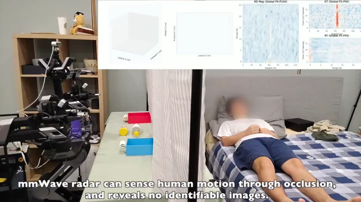

arXiv 2026
Multimodal Human Sensing · RoboticsmmHRI: Towards Privacy-Preserving Human-Robot Interaction with Millimeter-Wave Radar
Radar-guided human–robot interaction through privacy curtains, connecting human pose and action sensing to a VLA policy.
@article{fan2026mmhri, title = {mmHRI: Towards Privacy-Preserving Human-Robot Interaction with Millimeter-Wave Radar}, author = {Fan, Junqiao and Hu, Yuxuan and Lyu, Bofan and Lu, Yanshuo and Liu, Pengfei and Zhang, Jiarui and Ding, Fangqiang and Xie, Lihua and Li, Gen and Yang, Jianfei}, journal = {arXiv preprint arXiv:2609.34220}, year = {2026}, url = {https://arxiv.org/abs/2609.34220}, }